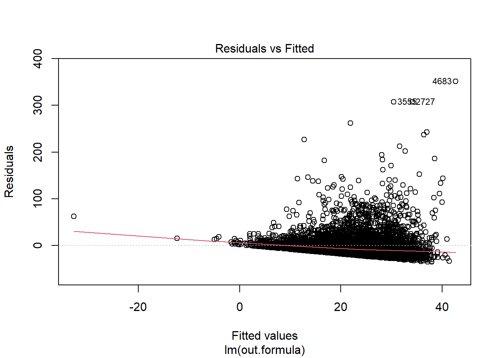
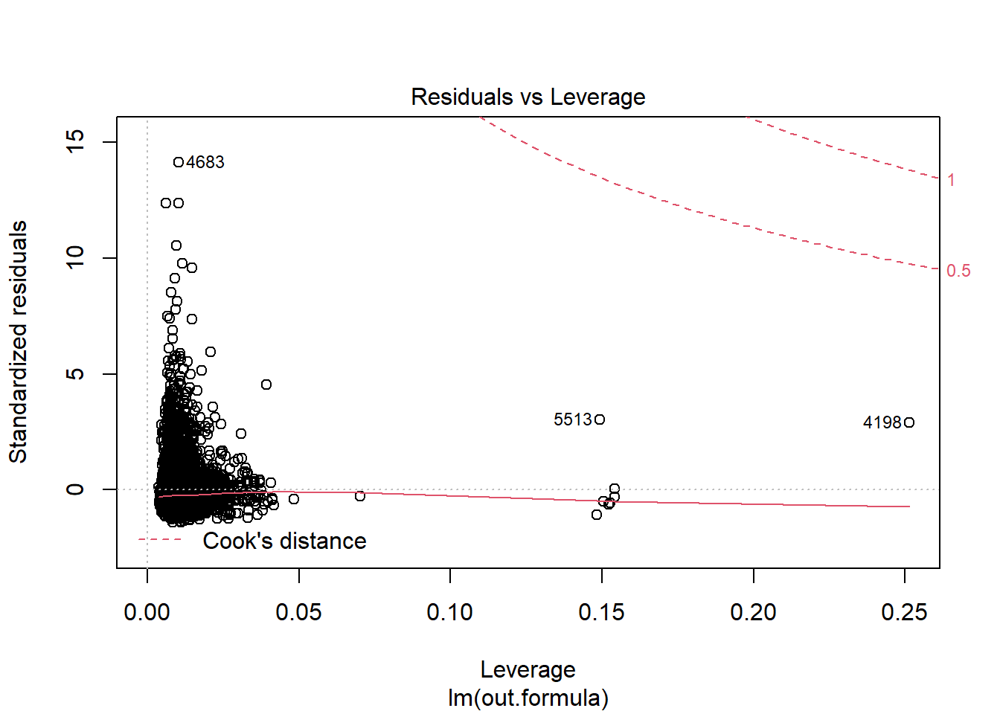
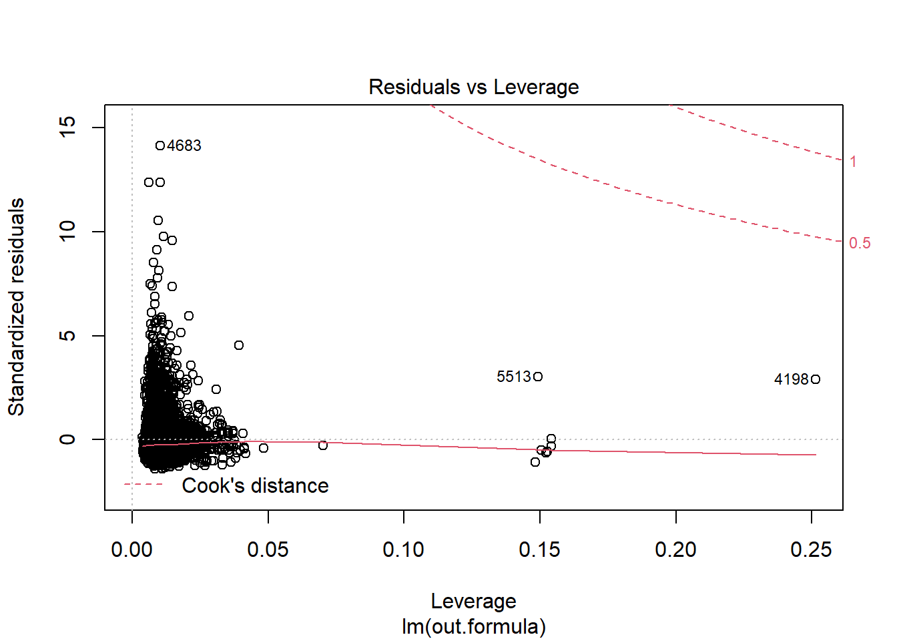
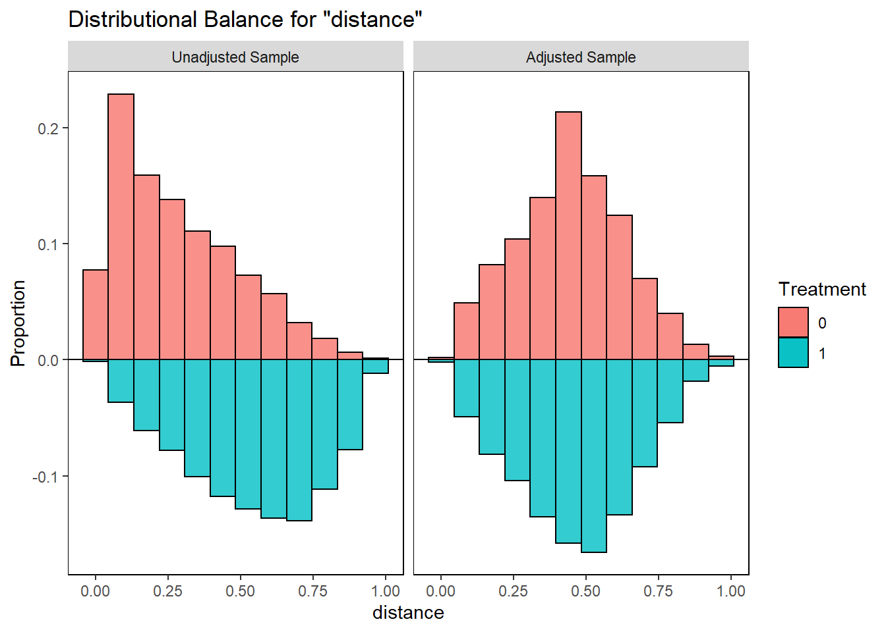
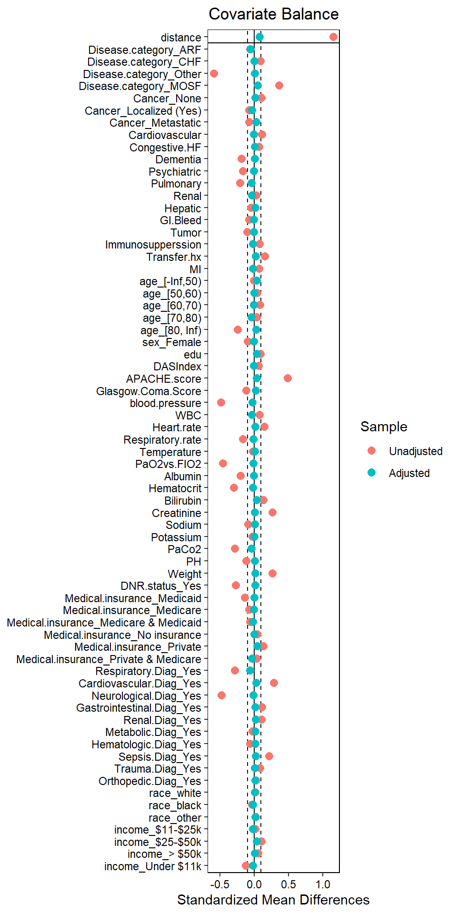

Chapter 1 RHC data description
There is a widespread belief among cardiologists that the right heart catheterization (RHC hereafter; a monitoring device for measurement of cardiac function) is helpful in managing critically ill patients in the intensive care unit. Connors et al. (1996) examined the association of
- RHC use during the first 24 hours of care in the intensive care unit and
- a number of health-outcomes such as length of stay (hospital).
1.1 Data download
Data is freely available from Vanderbilt Biostatistics.
# load the dataset
ObsData <- read.csv("https://hbiostat.org/data/repo/rhc.csv", header = TRUE)
saveRDS(ObsData, file = "data/rhc.RDS")1.2 Analytic data
# add column for outcome Y: length of stay
# Y = date of discharge - study admission date
# Y = date of death - study admission date if date of discharge not available
ObsData$Y <- ObsData$dschdte - ObsData$sadmdte
ObsData$Y[is.na(ObsData$Y)] <- ObsData$dthdte[is.na(ObsData$Y)] -
ObsData$sadmdte[is.na(ObsData$Y)]
# remove outcomes we are not examining in this example
ObsData <- dplyr::select(ObsData,
!c(dthdte, lstctdte, dschdte, death, t3d30, dth30, surv2md1))
# remove unnecessary and problematic variables
ObsData <- dplyr::select(ObsData,
!c(sadmdte, ptid, X, adld3p, urin1, cat2))
# convert all categorical variables to factors
factors <- c("cat1", "ca", "cardiohx", "chfhx", "dementhx", "psychhx",
"chrpulhx", "renalhx", "liverhx", "gibledhx", "malighx",
"immunhx", "transhx", "amihx", "sex", "dnr1", "ninsclas",
"resp", "card", "neuro", "gastr", "renal", "meta", "hema",
"seps", "trauma", "ortho", "race", "income")
ObsData[factors] <- lapply(ObsData[factors], as.factor)
# convert our treatment A (RHC vs. No RHC) to a binary variable
ObsData$A <- ifelse(ObsData$swang1 == "RHC", 1, 0)
ObsData <- dplyr::select(ObsData, !swang1)
# Categorize the variables to match with the original paper
ObsData$age <- cut(ObsData$age,breaks=c(-Inf, 50, 60, 70, 80, Inf),right=FALSE)
ObsData$race <- factor(ObsData$race, levels=c("white","black","other"))
ObsData$sex <- as.factor(ObsData$sex)
ObsData$sex <- relevel(ObsData$sex, ref = "Male")
ObsData$cat1 <- as.factor(ObsData$cat1)
levels(ObsData$cat1) <- c("ARF","CHF","Other","Other","Other",
"Other","Other","MOSF","MOSF")
ObsData$ca <- as.factor(ObsData$ca)
levels(ObsData$ca) <- c("Metastatic","None","Localized (Yes)")
ObsData$ca <- factor(ObsData$ca, levels=c("None",
"Localized (Yes)","Metastatic"))
# Rename variables
names(ObsData) <- c("Disease.category", "Cancer", "Cardiovascular",
"Congestive.HF", "Dementia", "Psychiatric", "Pulmonary",
"Renal", "Hepatic", "GI.Bleed", "Tumor",
"Immunosupperssion", "Transfer.hx", "MI", "age", "sex",
"edu", "DASIndex", "APACHE.score", "Glasgow.Coma.Score",
"blood.pressure", "WBC", "Heart.rate", "Respiratory.rate",
"Temperature", "PaO2vs.FIO2", "Albumin", "Hematocrit",
"Bilirubin", "Creatinine", "Sodium", "Potassium", "PaCo2",
"PH", "Weight", "DNR.status", "Medical.insurance",
"Respiratory.Diag", "Cardiovascular.Diag",
"Neurological.Diag", "Gastrointestinal.Diag", "Renal.Diag",
"Metabolic.Diag", "Hematologic.Diag", "Sepsis.Diag",
"Trauma.Diag", "Orthopedic.Diag", "race", "income",
"Y", "A")
saveRDS(ObsData, file = "data/rhcAnalytic.RDS")1.3 Notations
| Notations | Example in RHC study |
|---|---|
| \(A\): Exposure status | RHC |
| \(Y\): Observed outcome | length of stay |
| \(Y(A=1)\) = potential outcome when exposed | length of stay when RHC used |
| \(Y(A=0)\) = potential outcome when not exposed | length of stay when RHC not used |
| \(L\): Covariates | See below |
1.4 Variables
baselinevars <- names(dplyr::select(ObsData,
!c(A,Y)))
baselinevars## [1] "Disease.category" "Cancer" "Cardiovascular"
## [4] "Congestive.HF" "Dementia" "Psychiatric"
## [7] "Pulmonary" "Renal" "Hepatic"
## [10] "GI.Bleed" "Tumor" "Immunosupperssion"
## [13] "Transfer.hx" "MI" "age"
## [16] "sex" "edu" "DASIndex"
## [19] "APACHE.score" "Glasgow.Coma.Score" "blood.pressure"
## [22] "WBC" "Heart.rate" "Respiratory.rate"
## [25] "Temperature" "PaO2vs.FIO2" "Albumin"
## [28] "Hematocrit" "Bilirubin" "Creatinine"
## [31] "Sodium" "Potassium" "PaCo2"
## [34] "PH" "Weight" "DNR.status"
## [37] "Medical.insurance" "Respiratory.Diag" "Cardiovascular.Diag"
## [40] "Neurological.Diag" "Gastrointestinal.Diag" "Renal.Diag"
## [43] "Metabolic.Diag" "Hematologic.Diag" "Sepsis.Diag"
## [46] "Trauma.Diag" "Orthopedic.Diag" "race"
## [49] "income"1.5 Table 1 stratified by RHC exposure
Only for some demographic and co-morbidity variables; match with Table 1 in Connors et al. (1996).
require(tableone)
tab0 <- CreateTableOne(vars = c("age", "sex", "race", "Disease.category", "Cancer"),
data = ObsData,
strata = "A",
test = FALSE)
print(tab0, showAllLevels = FALSE, )## Stratified by A
## 0 1
## n 3551 2184
## age (%)
## [-Inf,50) 884 (24.9) 540 (24.7)
## [50,60) 546 (15.4) 371 (17.0)
## [60,70) 812 (22.9) 577 (26.4)
## [70,80) 809 (22.8) 529 (24.2)
## [80, Inf) 500 (14.1) 167 ( 7.6)
## sex = Female (%) 1637 (46.1) 906 (41.5)
## race (%)
## white 2753 (77.5) 1707 (78.2)
## black 585 (16.5) 335 (15.3)
## other 213 ( 6.0) 142 ( 6.5)
## Disease.category (%)
## ARF 1581 (44.5) 909 (41.6)
## CHF 247 ( 7.0) 209 ( 9.6)
## Other 955 (26.9) 208 ( 9.5)
## MOSF 768 (21.6) 858 (39.3)
## Cancer (%)
## None 2652 (74.7) 1727 (79.1)
## Localized (Yes) 638 (18.0) 334 (15.3)
## Metastatic 261 ( 7.4) 123 ( 5.6)Only outcome variable (Length of stay); slightly different than Table 2 in Connors et al. (1996) (means 20.5 vs. 25.7; and medians 13 vs. 17).
tab1 <- CreateTableOne(vars = c("Y"),
data = ObsData,
strata = "A",
test = FALSE)
print(tab1, showAllLevels = FALSE, )## Stratified by A
## 0 1
## n 3551 2184
## Y (mean (SD)) 19.53 (23.59) 24.86 (28.90)median(ObsData$Y[ObsData$A==0]); median(ObsData$Y[ObsData$A==1])## [1] 12## [1] 161.6 Basic regression analysis
1.6.1 Crude analysis
# adjust the exposure variable (primary interest)
fit0 <- lm(Y~A, data = ObsData)
require(Publish)
crude.fit <- publish(fit0, digits=1)$regressionTable[2,]crude.fit## Variable Units Coefficient CI.95 p-value
## 2 A 5.3 [4.0;6.7] <0.11.6.2 Adjusted analysis
# adjust the exposure variable (primary interest) + covariates
out.formula <- as.formula(paste("Y~ A +",
paste(baselinevars,
collapse = "+")))
fit1 <- lm(out.formula, data = ObsData)
adj.fit <- publish(fit1, digits=1)$regressionTable[2,]1.6.3 Regression diagnostics
out.formula## Y ~ A + Disease.category + Cancer + Cardiovascular + Congestive.HF +
## Dementia + Psychiatric + Pulmonary + Renal + Hepatic + GI.Bleed +
## Tumor + Immunosupperssion + Transfer.hx + MI + age + sex +
## edu + DASIndex + APACHE.score + Glasgow.Coma.Score + blood.pressure +
## WBC + Heart.rate + Respiratory.rate + Temperature + PaO2vs.FIO2 +
## Albumin + Hematocrit + Bilirubin + Creatinine + Sodium +
## Potassium + PaCo2 + PH + Weight + DNR.status + Medical.insurance +
## Respiratory.Diag + Cardiovascular.Diag + Neurological.Diag +
## Gastrointestinal.Diag + Renal.Diag + Metabolic.Diag + Hematologic.Diag +
## Sepsis.Diag + Trauma.Diag + Orthopedic.Diag + race + incomeadj.fit ## Variable Units Coefficient CI.95 p-value
## 2 A 2.9 [1.4;4.4] <0.1plot(fit1)
 

Diagnostics do not necessarily look so good.
1.7 Comparison with literature
Connors et al. (1996) conducted a propensity score matching analysis. Table 5 in Connors et al. (1996) showed that, after propensity score pair (1-to-1) matching, means of length of stay (\(Y\)), when stratified by RHC (\(A\)) was significantly different.
1.7.1 PSM
We also conduct propensity score pair matching analysis, as follows.
Note: In this workshop, we will not cover Propensity Score Matching (PSM) in this workshop. If you want to learn more about this, feel free to check out this other workshop: Understanding Propensity Score Matching.
set.seed(123)
require(MatchIt)
ps.formula <- as.formula(paste("A~",
paste(baselinevars, collapse = "+")))
PS.fit <- glm(ps.formula,family="binomial",
data=ObsData)
ObsData$PS <- predict(PS.fit,
newdata = ObsData, type="response")logitPS <- -log(1/ObsData$PS - 1)
match.obj <- matchit(ps.formula, data =ObsData,
distance = ObsData$PS,
method = "nearest", replace=FALSE,
ratio = 1, caliper = .1*sd(logitPS))1.7.2 PSM diagnostics
require(cobalt)
bal.plot(match.obj,
var.name = "distance",
which = "both",
type = "histogram",
mirror = TRUE)
love.plot(match.obj, binary = "std",
thresholds = c(m = .1))
The love plot suggests satisfactory propensity score matching (all SMD < 0.1).
1.7.3 PSM results
matched.data <- match.data(match.obj)
tab1y <- CreateTableOne(vars = c("Y"),
data = matched.data, strata = "A",
test = TRUE)
print(tab1y, showAllLevels = FALSE,
test = TRUE) ## Stratified by A
## 0 1 p test
## n 1628 1628
## Y (mean (SD)) 21.20 (25.58) 24.05 (27.49) 0.002We also find the same conclusion based on propensity score pair matched data.